<!DOCTYPE lake>
<p data-lake-id="u00c89cb6" id="u00c89cb6"><span data-lake-id="ue10677d6" id="ue10677d6">任何一个复杂的项目，咱们都可以把它拆分成若干个简单的任务，我们只需要一步步完成这些简单任务就可以实现一个复杂的任务咯。</span></p><p data-lake-id="u834fee6f" id="u834fee6f"><span data-lake-id="u09893bb1" id="u09893bb1">​</span><br/></p><p data-lake-id="u36a4d583" id="u36a4d583" style="text-align: center"><span data-lake-id="u98f125db" id="u98f125db" style="color: #DF2A3F">灯没点亮，串口没打印出来，别给我整其它花里胡哨没有用的任务。</span></p><p data-lake-id="u8bfab214" id="u8bfab214" style="text-align: center"><span data-lake-id="u3018e16a" id="u3018e16a" style="color: #DF2A3F">灯没点亮，串口没打印出来，别给我整其它花里胡哨没有用的任务。</span></p><p data-lake-id="u7318065c" id="u7318065c" style="text-align: center"><span data-lake-id="u5e54b0ad" id="u5e54b0ad" style="color: #DF2A3F">灯没点亮，串口没打印出来，别给我整其它花里胡哨没有用的任务。</span></p><p data-lake-id="uf38ae0a7" id="uf38ae0a7" style="text-align: center"><span class="lake-fontsize-9" data-lake-id="ue21329e3" id="ue21329e3" style="color: #000000">工欲善其事必先利其器， Do you understand ?</span></p><h2 data-lake-id="ufydD" data-lake-index-type="2" id="ufydD"><span data-lake-id="ue4e79cbc" id="ue4e79cbc">点灯大师</span></h2><p data-lake-id="ud6f04641" id="ud6f04641" style="text-align: center">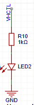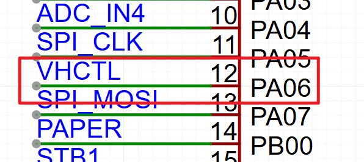</p><p data-lake-id="u49676cf5" id="u49676cf5" style="text-align: left"><span data-lake-id="ua906013b" id="ua906013b">现在请睁大你的双眼，回答我，该如何将这个灯点亮，是高电平灯亮还是低电平亮？   这都不会还学个锤子的嵌入式啊。</span></p><span class="yuque-card-unsupported">[codeblock]</span><p data-lake-id="u670061cc" id="u670061cc"><br/></p><h2 data-lake-id="s8wfR" data-lake-index-type="2" id="s8wfR"><span data-lake-id="u68b94d01" id="u68b94d01">缺纸检测</span></h2><p data-lake-id="ub6c85225" id="ub6c85225">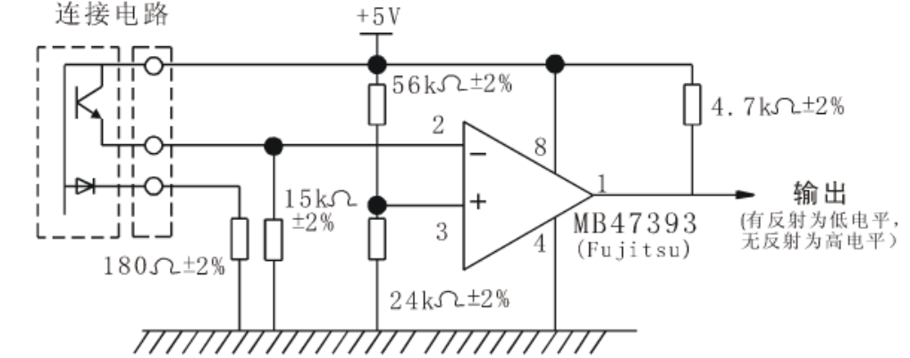</p><p data-lake-id="u0f1efacd" id="u0f1efacd" style="text-align: center">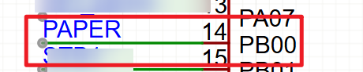</p><p data-lake-id="ua536c3e1" id="ua536c3e1"><span data-lake-id="u404f77bb" id="u404f77bb">这个任务，我只能告诉你，有纸和缺纸这个引脚读取到的电平是不一样，请问此题该如何进行求解？</span></p><span class="yuque-card-unsupported">[codeblock]</span><h2 data-lake-id="zHkBp" data-lake-index-type="2" id="zHkBp"><span data-lake-id="uebf9953b" id="uebf9953b">温度检测</span></h2><p data-lake-id="uaec7076a" id="uaec7076a"><span data-lake-id="u7a3d672e" id="u7a3d672e">温度检测不是有手就会的任务吗？这还需要写解释说明的文档吗？ 我闭着眼睛都知道热敏电阻的求解需要用查表法读取温度，那么请问下面这个数学公式是干啥用的？</span></p><p data-lake-id="udc999a05" id="udc999a05">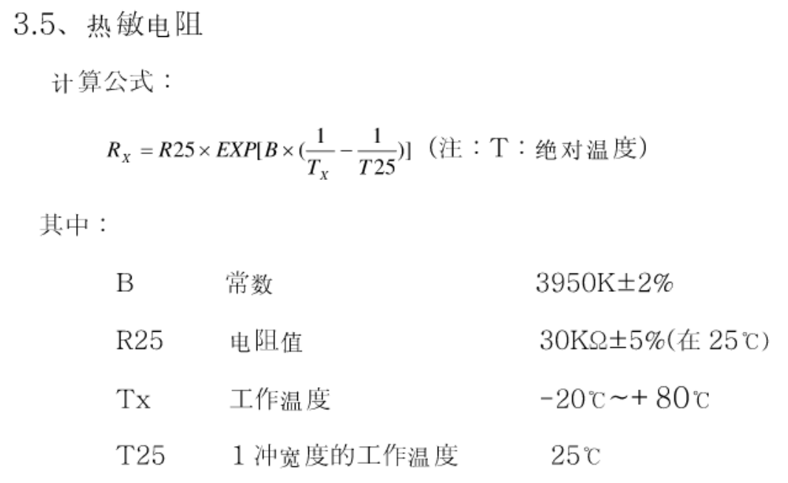</p><p data-lake-id="u3e474c91" id="u3e474c91" style="text-align: center">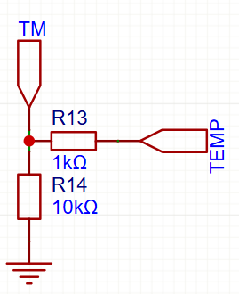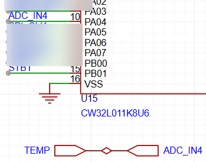</p><p data-lake-id="ua95d02b4" id="ua95d02b4" style="text-align: center"><span data-lake-id="u1486ba86" id="u1486ba86">​</span><br/></p><h3 data-lake-id="qz8sD" data-lake-index-type="2" id="qz8sD"><span data-lake-id="uc9f34b08" id="uc9f34b08">延时函数</span></h3><span class="yuque-card-unsupported">[codeblock]</span><p data-lake-id="u29eb9dc2" id="u29eb9dc2"><br/></p><h3 data-lake-id="IuUo2" data-lake-index-type="2" id="IuUo2"><span data-lake-id="uf4697654" id="uf4697654">ADC初始化</span></h3><span class="yuque-card-unsupported">[codeblock]</span><p data-lake-id="u417b3068" id="u417b3068"><br/></p><h3 data-lake-id="nP23j" data-lake-index-type="2" id="nP23j"><span data-lake-id="ucdd2deab" id="ucdd2deab">读取ADC值</span></h3><span class="yuque-card-unsupported">[codeblock]</span><h3 data-lake-id="iv829" data-lake-index-type="2" id="iv829"><span data-lake-id="u39419caf" id="u39419caf">温度换算</span></h3><span class="yuque-card-unsupported">[codeblock]</span><p data-lake-id="u5414e375" id="u5414e375"><br/></p><h2 data-lake-id="iVIRM" data-lake-index-type="2" id="iVIRM"><span data-lake-id="u5f5c3d76" id="u5f5c3d76">SSD1306屏幕驱动</span></h2><p data-lake-id="uf82d3c91" id="uf82d3c91"><span data-lake-id="ub380d2b1" id="ub380d2b1">有手就会驱动的屏幕，我只能告诉你一下这坨关键代码</span></p><span class="yuque-card-unsupported">[codeblock]</span><p data-lake-id="ua0750ee8" id="ua0750ee8"><span data-lake-id="u978bb029" id="u978bb029">​</span><br/></p><h2 data-lake-id="tylFv" data-lake-index-type="2" id="tylFv"><span data-lake-id="u1f5d94bc" id="u1f5d94bc">步进电机驱动</span></h2><h3 data-lake-id="O081z" data-lake-index-type="2" id="O081z"><span data-lake-id="ucd9c804a" id="ucd9c804a" style="color: rgba(0, 0, 0, 0.9); background-color: rgb(252, 252, 252)">步进电机的基本原理</span></h3><ul list="u52a47096"><li data-lake-id="u9d92cc53" fid="u584b259f" id="u9d92cc53" style="text-align: left"><strong><span class="lake-fontsize-12" data-lake-id="u9c47c42a" id="u9c47c42a" style="color: rgba(0, 0, 0, 0.9); background-color: rgb(252, 252, 252)">工作原理</span></strong><span class="lake-fontsize-12" data-lake-id="u5a11d32e" id="u5a11d32e" style="color: rgba(0, 0, 0, 0.9); background-color: rgb(252, 252, 252)">：<br/></span><span class="lake-fontsize-12" data-lake-id="u356df3d5" id="u356df3d5" style="color: rgba(0, 0, 0, 0.9); background-color: rgb(252, 252, 252)">电机接收一个电脉冲信号，转子就转动一个固定角度（称为</span><strong><span class="lake-fontsize-12" data-lake-id="u0ff4412b" id="u0ff4412b" style="color: rgba(0, 0, 0, 0.9); background-color: rgb(252, 252, 252)">步距角</span></strong><span class="lake-fontsize-12" data-lake-id="u5bc7011b" id="u5bc7011b" style="color: rgba(0, 0, 0, 0.9); background-color: rgb(252, 252, 252)">），如1.8°（200步/转）或0.9°（400步/转）。</span></li><li data-lake-id="u324ce4b2" fid="u584b259f" id="u324ce4b2" style="text-align: left"><strong><span class="lake-fontsize-12" data-lake-id="ud387a10c" id="ud387a10c" style="color: rgba(0, 0, 0, 0.9); background-color: rgb(252, 252, 252)">开环控制</span></strong><span class="lake-fontsize-12" data-lake-id="u22fd5837" id="u22fd5837" style="color: rgba(0, 0, 0, 0.9); background-color: rgb(252, 252, 252)">：<br/></span><span class="lake-fontsize-12" data-lake-id="uacea97c8" id="uacea97c8" style="color: rgba(0, 0, 0, 0.9); background-color: rgb(252, 252, 252)">无需编码器反馈，只要控制脉冲数量，就能精确控制位置和速度。</span></li></ul><p data-lake-id="uc30db55f" id="uc30db55f"><br/></p><p data-lake-id="ue8a9af1d" id="ue8a9af1d"></p><p data-lake-id="ubac994df" id="ubac994df"><span class="lake-fontsize-12" data-lake-id="u9f64419b" id="u9f64419b" style="color: rgba(0, 0, 0, 0.9); background-color: rgb(252, 252, 252)">电机两组线圈（A+/A-、B+/B-）通过H桥电路实现电流正反向切换，形成旋转磁场。</span></p><p data-lake-id="uff37ac73" id="uff37ac73"><strong><span data-lake-id="u30d2cb48" id="u30d2cb48" style="color: rgba(0, 0, 0, 0.9); background-color: rgb(252, 252, 252)">总结</span></strong></p><p data-lake-id="u56056407" id="u56056407"><span class="lake-fontsize-12" data-lake-id="u604b8c7f" id="u604b8c7f" style="color: rgba(0, 0, 0, 0.9); background-color: rgb(252, 252, 252)">步进电机是</span><strong><span class="lake-fontsize-12" data-lake-id="u4dfe0575" id="u4dfe0575" style="color: rgba(0, 0, 0, 0.9); background-color: rgb(252, 252, 252)">低成本、高精度</span></strong><span class="lake-fontsize-12" data-lake-id="u1b9a9e9f" id="u1b9a9e9f" style="color: rgba(0, 0, 0, 0.9); background-color: rgb(252, 252, 252)">的运动控制解决方案，适用于需要</span><strong><span class="lake-fontsize-12" data-lake-id="uf2a4766e" id="uf2a4766e" style="color: rgba(0, 0, 0, 0.9); background-color: rgb(252, 252, 252)">精准定位</span></strong><span class="lake-fontsize-12" data-lake-id="ua81aa6e3" id="ua81aa6e3" style="color: rgba(0, 0, 0, 0.9); background-color: rgb(252, 252, 252)">的自动化设备。选择合适的</span><strong><span class="lake-fontsize-12" data-lake-id="uef8c5304" id="uef8c5304" style="color: rgba(0, 0, 0, 0.9); background-color: rgb(252, 252, 252)">电机类型+驱动方式</span></strong><span class="lake-fontsize-12" data-lake-id="ue60fc806" id="ue60fc806" style="color: rgba(0, 0, 0, 0.9); background-color: rgb(252, 252, 252)">，可以大幅提升系统性能！</span></p><p data-lake-id="ucba88740" id="ucba88740"><span class="lake-fontsize-12" data-lake-id="u25148603" id="u25148603" style="color: rgba(0, 0, 0, 0.9); background-color: rgb(252, 252, 252)">​</span><br/></p><h3 data-lake-id="h5pjA" data-lake-index-type="2" id="h5pjA"><span data-lake-id="uc2042f2f" id="uc2042f2f" style="color: rgba(0, 0, 0, 0.9); background-color: rgb(252, 252, 252)">打印头上的步进电机</span></h3><p data-lake-id="u8c04c1e8" id="u8c04c1e8"><span class="lake-fontsize-12" data-lake-id="ub6b88e94" id="ub6b88e94">打印头上的步进电机主要作用就上控制纸张的移动，每打印完一行，我们需要控制纸张移动一行。</span></p><p data-lake-id="u56796d27" id="u56796d27"><span class="lake-fontsize-12" data-lake-id="u611d915e" id="u611d915e">下面这张表上打印头上步进电机的参数表。</span></p><p data-lake-id="ue69fb853" id="ue69fb853"><span class="lake-fontsize-12" data-lake-id="u77583b89" id="u77583b89" style="color: rgba(0, 0, 0, 0.9); background-color: rgb(252, 252, 252)">​</span><br/></p><p data-lake-id="udc254909" id="udc254909"></p><p data-lake-id="u63492141" id="u63492141" style="text-indent: 2em"></p><p data-lake-id="u2967848a" id="u2967848a"><br/></p><h3 data-lake-id="jlnoB" data-lake-index-type="2" id="jlnoB"><span data-lake-id="u4db15d38" id="u4db15d38">八拍控制周期</span></h3><span class="yuque-card-unsupported">[codeblock]</span><p data-lake-id="ua2c89b76" id="ua2c89b76"><br/></p><h3 data-lake-id="nceAD" data-lake-index-type="2" id="nceAD"><span data-lake-id="uf1b11ecf" id="uf1b11ecf">引脚初始化</span></h3><span class="yuque-card-unsupported">[codeblock]</span><h3 data-lake-id="drSbs" data-lake-index-type="2" id="drSbs"><span data-lake-id="u6bc38a2e" id="u6bc38a2e">步进运动</span></h3><span class="yuque-card-unsupported">[codeblock]</span><p data-lake-id="u74946b51" id="u74946b51"><br/></p><h3 data-lake-id="Rzswy" data-lake-index-type="2" id="Rzswy"><span data-lake-id="u80c33be7" id="u80c33be7">步进停止</span></h3><p data-lake-id="u02ad8d7c" id="u02ad8d7c"><span data-lake-id="udc6d56ed" id="udc6d56ed">如果步进电机运动完，不调用停止的话，会导致步进电机发烫。电能无法转变为机械能将会转变为热能消耗掉。</span></p><span class="yuque-card-unsupported">[codeblock]</span><p data-lake-id="ufa21f7b1" id="ufa21f7b1"><br/></p><h2 data-lake-id="Ixa0U" data-lake-index-type="2" id="Ixa0U"><span data-lake-id="ucb2293cc" id="ucb2293cc">打印一行数据</span></h2><p data-lake-id="u76142641" id="u76142641">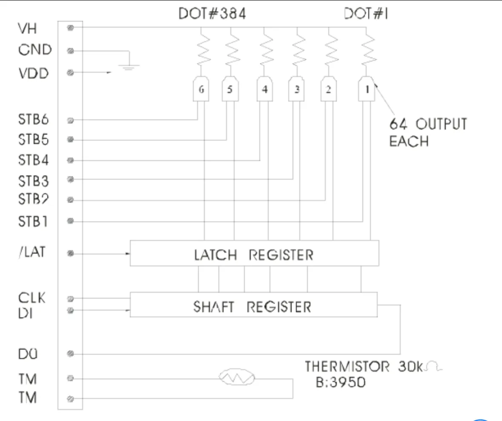</p><h3 data-lake-id="uYaiV" data-lake-index-type="2" id="uYaiV"><span data-lake-id="u198574a9" id="u198574a9">SPI通信</span></h3><h4 data-lake-id="pKf1C" data-lake-index-type="2" id="pKf1C"><span data-lake-id="u538c490f" id="u538c490f">初始化</span></h4><span class="yuque-card-unsupported">[codeblock]</span><h4 data-lake-id="axPpW" data-lake-index-type="2" id="axPpW"><span data-lake-id="u718e203a" id="u718e203a">发送一串数据</span></h4><span class="yuque-card-unsupported">[codeblock]</span><h3 data-lake-id="vO23t" data-lake-index-type="2" id="vO23t"><span data-lake-id="u7ce17c21" id="u7ce17c21">锁存器</span></h3><p data-lake-id="u70b2c8d7" id="u70b2c8d7">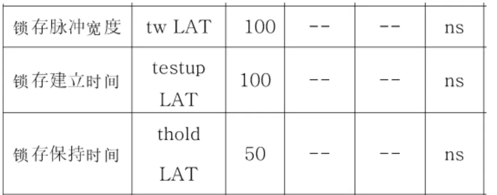</p><p data-lake-id="u9b5e383c" id="u9b5e383c"><span data-lake-id="u7fa35bf7" id="u7fa35bf7">将数据刷出去，即将数据发送到加热头上去打印，从下表可知数据锁存时间大概需要250ns,保险起见我们直接填写</span><strong><span data-lake-id="uc18824fb" id="uc18824fb">1us</span></strong></p><p data-lake-id="uefda8448" id="uefda8448"><span data-lake-id="ua181c183" id="ua181c183">SPI每次将一行数据发送到打印头，锁存器就开始工作1us, 依次将数据刷到打印纸上去</span></p><span class="yuque-card-unsupported">[codeblock]</span><h3 data-lake-id="DhAJC" data-lake-index-type="2" id="DhAJC"><span data-lake-id="ufd8392ef" id="ufd8392ef">6个加热头</span></h3><p data-lake-id="u5aba7669" id="u5aba7669">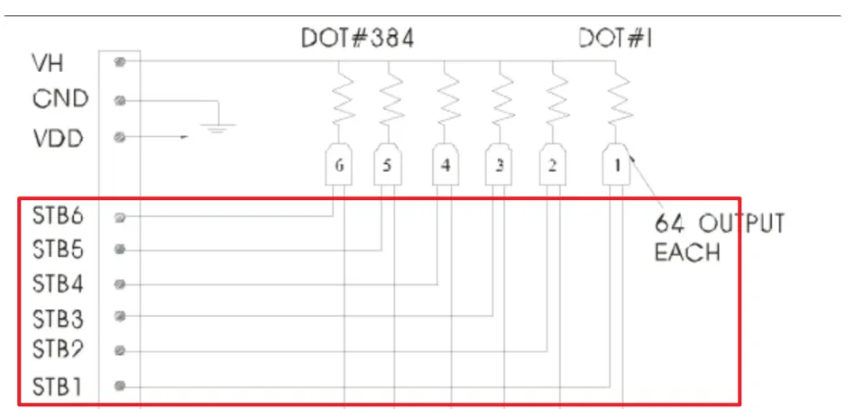</p><p data-lake-id="u8731a659" id="u8731a659"></p><p data-lake-id="u59b9fc27" id="u59b9fc27"><span data-lake-id="uf47cc590" id="uf47cc590">总共有6个加热头，每行的时间上1.25ms,每个加热头所用的时间大概上1.25ms,加热时间越长颜色越深, 一个加热头处理完成之后，我们再稍微演示10us去处理下一个加热头的额数据</span></p><p data-lake-id="u749ada81" id="u749ada81"><span data-lake-id="u4a7c01f4" id="u4a7c01f4">为了让数据能打印到打印纸上，我们需要依次让6个加热头加热</span></p><span class="yuque-card-unsupported">[codeblock]</span><p data-lake-id="ucea6403e" id="ucea6403e"><span data-lake-id="u19980bd8" id="u19980bd8">​</span><br/></p><h3 data-lake-id="aHiFq" data-lake-index-type="2" id="aHiFq"><span data-lake-id="u98ae8891" id="u98ae8891">打印一行数据</span></h3><span class="yuque-card-unsupported">[codeblock]</span><p data-lake-id="u22c3fca8" id="u22c3fca8"><br/></p><p data-lake-id="u647e1fa5" id="u647e1fa5"><br/></p><h2 data-lake-id="APLfw" data-lake-index-type="2" id="APLfw"><span data-lake-id="u332fa7c2" id="u332fa7c2">打印多行数据</span></h2><p data-lake-id="ub896bfec" id="ub896bfec"><span data-lake-id="u63f9da55" id="u63f9da55">参考上面我们所写过的代码，打印多行步骤如下：</span></p><ol list="uf7980ce1"><li data-lake-id="u7532aa4b" fid="u8b73f281" id="u7532aa4b"><span data-lake-id="ub35eb1e3" id="ub35eb1e3">打印一行数据</span></li><li data-lake-id="ua3496d98" fid="u8b73f281" id="ua3496d98"><span data-lake-id="ud302d123" id="ud302d123">步进电机移动4步，纸张移动一行</span></li></ol><h2 data-lake-id="LmKWz" data-lake-index-type="2" id="LmKWz"><span data-lake-id="u774efd32" id="u774efd32">串口通信</span></h2><h3 data-lake-id="XLZT2" data-lake-index-type="2" id="XLZT2"><span data-lake-id="ud534c6d9" id="ud534c6d9">环形队列</span></h3><h4 data-lake-id="TOXpS" data-lake-index-type="2" id="TOXpS"><span data-lake-id="ufd5ae263" id="ufd5ae263">导入文件</span></h4><p data-lake-id="u96724f7d" id="u96724f7d"><span data-lake-id="u7b9a5849" id="u7b9a5849">复制祖传的环形队列，将串口接收的数据一次放到队列中</span></p><span class="yuque-card-unsupported">[codeblock]</span><span class="yuque-card-unsupported">[codeblock]</span><h4 data-lake-id="U8ayl" data-lake-index-type="2" id="U8ayl"><span data-lake-id="ucb7b66e3" id="ucb7b66e3">环形队列初始化</span></h4><p data-lake-id="ud730d0bf" id="ud730d0bf"><span data-lake-id="u522bc183" id="u522bc183">声明常量</span></p><span class="yuque-card-unsupported">[codeblock]</span><p data-lake-id="u47712203" id="u47712203"><span data-lake-id="u22086ea4" id="u22086ea4">在mian函数中初始化</span></p><span class="yuque-card-unsupported">[codeblock]</span><h4 data-lake-id="AHf5t" data-lake-index-type="2" id="AHf5t"><span data-lake-id="u13b853d5" id="u13b853d5">添加数据</span></h4><p data-lake-id="u14a71820" id="u14a71820"><span data-lake-id="udf2d72f4" id="udf2d72f4">在中断处理函数中，向队列中添加串口数据</span></p><span class="yuque-card-unsupported">[codeblock]</span><h4 data-lake-id="BaqTH" data-lake-index-type="2" id="BaqTH"><span data-lake-id="u327ba026" id="u327ba026">解析数据</span></h4><p data-lake-id="u0150981b" id="u0150981b"><span data-lake-id="ub17c0fdb" id="ub17c0fdb">我们在主循环中，不停的去调用解析的函数</span></p><span class="yuque-card-unsupported">[codeblock]</span><p data-lake-id="u7112bcc1" id="u7112bcc1"><span data-lake-id="u33d7fd4e" id="u33d7fd4e">通过该函数，我们可以获得完整的一帧数据</span></p><span class="yuque-card-unsupported">[codeblock]</span><p data-lake-id="u1b057347" id="u1b057347"><span data-lake-id="u5c7a7a6c" id="u5c7a7a6c">当我们拿到完整的一帧数据之后，再根据数据内容去完成相关的动作</span></p><span class="yuque-card-unsupported">[codeblock]</span><p data-lake-id="ufc75911c" id="ufc75911c"><br/></p><h4 data-lake-id="SBe3Z" data-lake-index-type="2" id="SBe3Z"><span data-lake-id="u7525077d" id="u7525077d">测试数据</span></h4><p data-lake-id="ucde69af5" id="ucde69af5"><strong><span data-lake-id="u266db027" id="u266db027">命令协议</span></strong><span data-lake-id="u5410a65e" id="u5410a65e">：</span></p><table class="lake-table" data-lake-id="MbIyI" id="MbIyI" margin="true" style="width: 714px" width-mode="contain"><colgroup><col width="169"/><col width="295"/><col width="250"/></colgroup><tbody><tr data-lake-id="u339e7553" id="u339e7553"><td data-lake-id="u30b6fddb" id="u30b6fddb"><p data-lake-id="uacf45dfa" id="uacf45dfa"><span data-lake-id="ubc85bdb4" id="ubc85bdb4">协议名称</span></p></td><td data-lake-id="u6b8474c9" id="u6b8474c9"><p data-lake-id="ufff47f5e" id="ufff47f5e"><span data-lake-id="u51c8e351" id="u51c8e351">协议内容（帧头 命令位 校验位 帧尾）</span></p></td><td data-lake-id="ue3a8d43c" id="ue3a8d43c"><p data-lake-id="ud8750315" id="ud8750315"><span data-lake-id="uec96565e" id="uec96565e">举例</span></p></td></tr><tr data-lake-id="uaccbc65f" id="uaccbc65f" style="height: 36px"><td data-lake-id="u889de13e" id="u889de13e"><p data-lake-id="u6f5948f3" id="u6f5948f3"><span data-lake-id="uc6601f20" id="uc6601f20">打开加热头</span></p></td><td data-lake-id="u3c7eb8cb" id="u3c7eb8cb"><p data-lake-id="ua624de50" id="ua624de50"><span data-lake-id="ua440c65c" id="ua440c65c">0x01</span></p></td><td data-lake-id="u89bdc52e" id="u89bdc52e"><p data-lake-id="u0fc6ba72" id="u0fc6ba72"><span data-lake-id="udde261d8" id="udde261d8">AA AA 00 01 01 02 BB</span></p></td></tr><tr data-lake-id="u161c4d9f" id="u161c4d9f"><td data-lake-id="u9f8f6990" id="u9f8f6990"><p data-lake-id="u0a8c6206" id="u0a8c6206"><span data-lake-id="u41d4b120" id="u41d4b120">关闭加热头</span></p></td><td data-lake-id="u15476beb" id="u15476beb"><p data-lake-id="udc713e2d" id="udc713e2d"><span data-lake-id="ub3aaa387" id="ub3aaa387">0x02</span></p></td><td data-lake-id="ua70cc27c" id="ua70cc27c"><p data-lake-id="u363ab3fb" id="u363ab3fb"><span data-lake-id="uec0542a5" id="uec0542a5">AA AA 00 01 02 03 BB</span></p></td></tr><tr data-lake-id="u788cbb8e" id="u788cbb8e"><td data-lake-id="u0ab7f64f" id="u0ab7f64f"><p data-lake-id="u8c7d057b" id="u8c7d057b"><span data-lake-id="u41a20858" id="u41a20858">移动纸张</span></p></td><td data-lake-id="ubd11b8e3" id="ubd11b8e3"><p data-lake-id="u772762d8" id="u772762d8"><span data-lake-id="u622d096c" id="u622d096c">0x03</span></p></td><td data-lake-id="u7b7c3315" id="u7b7c3315"><p data-lake-id="u0989892c" id="u0989892c"><span data-lake-id="u8dceba27" id="u8dceba27">AA AA 00 01 03 04 BB</span></p></td></tr><tr data-lake-id="ua04252dd" id="ua04252dd"><td data-lake-id="u72619183" id="u72619183"><p data-lake-id="ud70b6148" id="ud70b6148"><br/></p></td><td data-lake-id="ub7edc48d" id="ub7edc48d"></td><td data-lake-id="u0d065ce9" id="u0d065ce9"></td></tr></tbody></table><p data-lake-id="uc0bd4029" id="uc0bd4029"><span data-lake-id="uad60cb06" id="uad60cb06">注意: 在本节案例中，为了简单易懂，我们并没有真实的去计算校验位</span></p><p data-lake-id="uf579f0f3" id="uf579f0f3"><span data-lake-id="u842ce729" id="u842ce729">​</span><br/></p><p data-lake-id="u944b75ba" id="u944b75ba"><strong><span data-lake-id="u85df1ebf" id="u85df1ebf">数据协议</span></strong><span data-lake-id="ue75abcbd" id="ue75abcbd">：</span></p><table class="lake-table" data-lake-id="Npn17" id="Npn17" margin="true" style="width: 750px" width-mode="contain"><colgroup><col width="250"/><col width="250"/><col width="250"/></colgroup><tbody><tr data-lake-id="u206fe44e" id="u206fe44e"><td data-lake-id="ua712ccb9" id="ua712ccb9"><p data-lake-id="u4915b648" id="u4915b648"><span data-lake-id="u82392c8b" id="u82392c8b">协议名称</span></p></td><td data-lake-id="uee022b4e" id="uee022b4e"><p data-lake-id="u7d3c46ed" id="u7d3c46ed"><span data-lake-id="u1e055352" id="u1e055352">协议内容</span></p></td><td data-lake-id="u36dc4082" id="u36dc4082"><p data-lake-id="ud7bde484" id="ud7bde484"><span data-lake-id="u950a7d6a" id="u950a7d6a">举例</span></p></td></tr><tr data-lake-id="ubbd4ee23" id="ubbd4ee23"><td data-lake-id="u16ca70b2" id="u16ca70b2"><p data-lake-id="u2c6586b1" id="u2c6586b1"><span data-lake-id="u76eed19a" id="u76eed19a">图像数据</span></p></td><td data-lake-id="u8876085e" id="u8876085e"><p data-lake-id="ud46d4a6a" id="ud46d4a6a"><span data-lake-id="u6ad398d3" id="u6ad398d3">48字节图像数据</span></p></td><td data-lake-id="u85d2644e" id="u85d2644e"><p data-lake-id="u94aca076" id="u94aca076"><span data-lake-id="u6c3dafad" id="u6c3dafad">AA AA 01 30 00 00 00 00 00 00 F9 F8 F8 FC 00 FC 3E 38 3E 7C F8 F8 00 07 FF F8 3F FC 7C FC 7F 80 01 FE 7F FF CF DE 00 01 F0 00 03 C0 00 F0 00 00 00 00 00 00 B0 BB</span></p></td></tr><tr data-lake-id="u820aa0d5" id="u820aa0d5"><td data-lake-id="u08c0c885" id="u08c0c885"></td><td data-lake-id="uf7895c96" id="uf7895c96"></td><td data-lake-id="ud8c30145" id="ud8c30145"></td></tr></tbody></table><p data-lake-id="u9369c650" id="u9369c650"><span data-lake-id="u6d14d84f" id="u6d14d84f">​</span><br/></p><p data-lake-id="ua96522f4" id="ua96522f4"><span data-lake-id="u6b6c1cab" id="u6b6c1cab">现在要怎么测试这个数据，还需要我多说一句话吗 ？ 哦，当然，还是要手摸手教一下的，现在请打开你的屎山代码，编写串口发送的逻辑不就OK了吗？</span></p><p data-lake-id="u2e45aab4" id="u2e45aab4"><span data-lake-id="uc063fd72" id="uc063fd72"> <br/></span><span data-lake-id="ue89b186b" id="ue89b186b">拜托，醒醒吧，找个串口调试工具，把这段数据发给单片机做测试不是更加简单吗？ 快打开你最熟悉的串口调试工具以16进制的方式发送上面的逻辑吧。 </span></p><p data-lake-id="u8cbcc1dd" id="u8cbcc1dd"><br/></p><p data-lake-id="u9efbc4dd" id="u9efbc4dd"><br/></p><h2 data-lake-id="kaTFu" data-lake-index-type="2" id="kaTFu"><span data-lake-id="u4d0a73e6" id="u4d0a73e6">上位机发送</span></h2><p data-lake-id="uea102bb1" id="uea102bb1">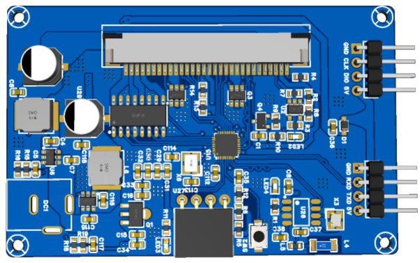</p><p data-lake-id="uec7e798d" id="uec7e798d"><span data-lake-id="ub265e9fa" id="ub265e9fa">请看上面这张图，应该要知道该怎么接线了吧。</span></p><p data-lake-id="u7808d31b" id="u7808d31b"><span data-lake-id="u5edb4462" id="u5edb4462">RXD ---TX</span></p><p data-lake-id="u5bb6d1ef" id="u5bb6d1ef"><span data-lake-id="u80411339" id="u80411339">TXD ---RX</span></p><p data-lake-id="u722ca82a" id="u722ca82a"><span data-lake-id="u641f0c10" id="u641f0c10">GND---GND</span></p><p data-lake-id="u7b8b7892" id="u7b8b7892"><span data-lake-id="uce5cd08d" id="uce5cd08d">​</span><br/></p><h3 data-lake-id="KA3h1" data-lake-index-type="2" id="KA3h1"><span data-lake-id="ubdeacb22" id="ubdeacb22">打印一行数据</span></h3><span class="yuque-card-unsupported">[codeblock]</span><h3 data-lake-id="v0Dkv" data-lake-index-type="2" id="v0Dkv"><span data-lake-id="u4410ac06" id="u4410ac06">打印5行数据</span></h3><p data-lake-id="u633059f9" id="u633059f9"><span data-lake-id="u7dcf9b60" id="u7dcf9b60">动动你的小脑袋瓜，想一想如何打印5行啊</span></p><p data-lake-id="u19131df0" id="u19131df0"><span data-lake-id="u1f3f1b21" id="u1f3f1b21">​</span><br/></p><h3 data-lake-id="YIrzd" data-lake-index-type="2" id="YIrzd"><span data-lake-id="ua15fd65c" id="ua15fd65c">图片打印机</span></h3><span class="yuque-card-unsupported">[codeblock]</span><p data-lake-id="u2ec4c978" id="u2ec4c978"><span data-lake-id="ue833998c" id="ue833998c">快用你聪明的小脑袋瓜实现这个功能吧！</span></p><p data-lake-id="u3b3df1f4" id="u3b3df1f4">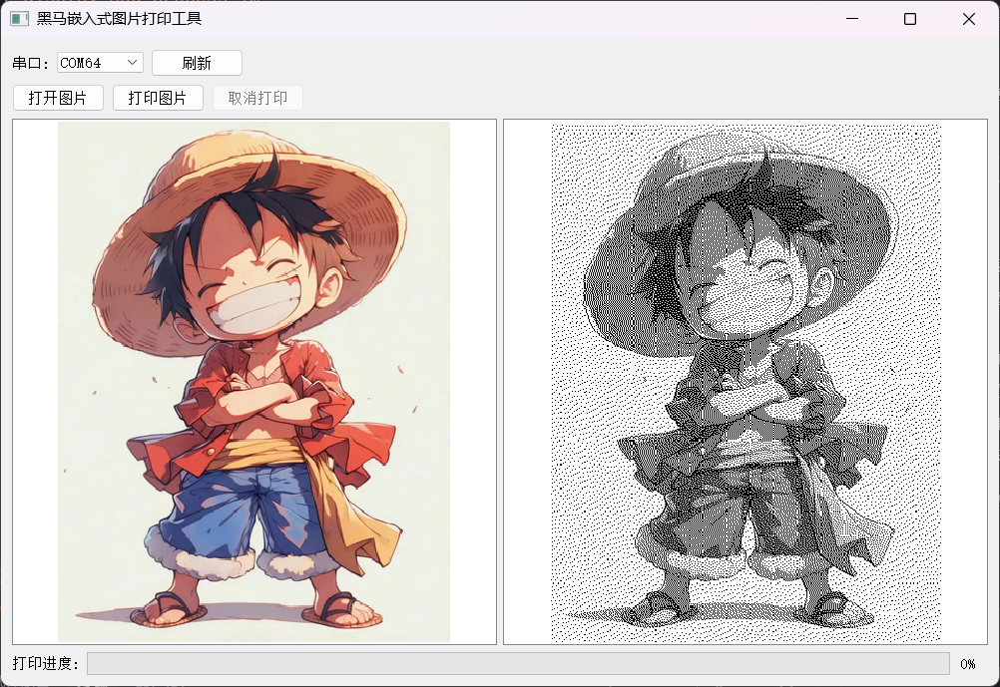</p><h3 data-lake-id="o5sXe" data-lake-index-type="2" id="o5sXe"><span data-lake-id="u07f42bd3" id="u07f42bd3">牛马打印机</span></h3><p data-lake-id="u978e3dab" id="u978e3dab"><span data-lake-id="ufc7aae9f" id="ufc7aae9f">该项目捕捉实时画面展示出来，当单击打印图像的时候，就会捕获当前画面，然后将数据通过打印机打印出来</span></p><p data-lake-id="u73f65ffd" id="u73f65ffd">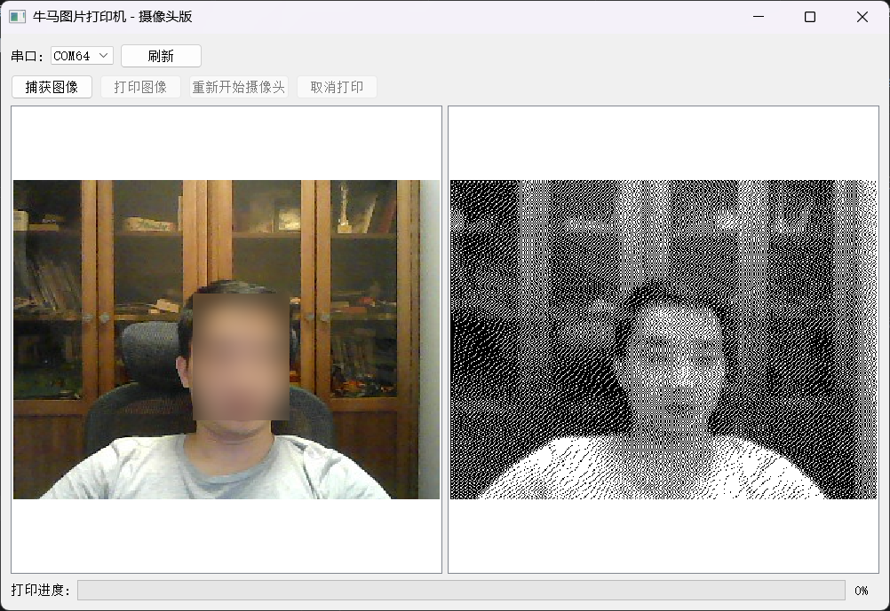</p><h3 data-lake-id="xRbep" data-lake-index-type="2" id="xRbep"><span data-lake-id="u941f1172" id="u941f1172">文本打印机</span></h3><p data-lake-id="uc2aadfb9" id="uc2aadfb9"><span data-lake-id="u59757b08" id="u59757b08">快用你聪明的小脑袋瓜实现这个功能吧！</span></p><p data-lake-id="ubaca7774" id="ubaca7774">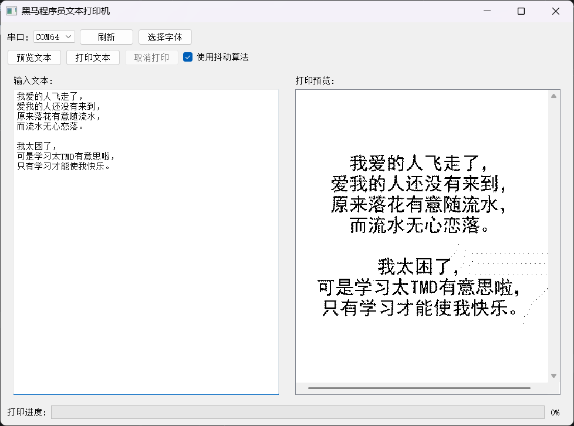</p><h3 data-lake-id="hhaln" data-lake-index-type="2" id="hhaln"><span data-lake-id="u53c050b0" id="u53c050b0">麦当劳点餐系统</span></h3><p data-lake-id="ud902eaba" id="ud902eaba"><span data-lake-id="u0e1114b8" id="u0e1114b8">回答我，前面的任务做完了吗？ 没做完的话，这个任务不适合你。</span></p><p data-lake-id="u0198f667" id="u0198f667"></p>